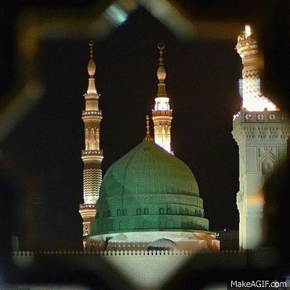
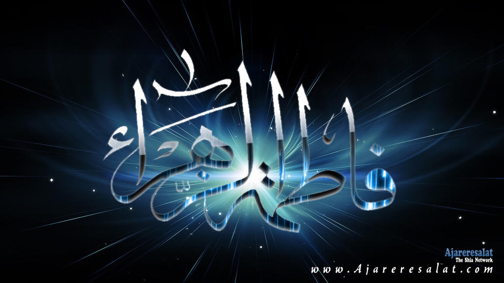
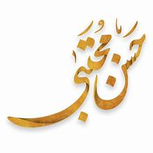
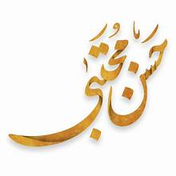

Allah
a square stone building in the center of the Great Mosque at Mecca,
the site most holy to Muslims and toward which they must face when praying.
It stands on the site of a pre-Islamic shrine said to have been built by Abraham,
and a sacred Black Stone is set in its southeastern corner.

Huzrat muhammed saw
Medina,[a] officially Al-Madinah al-Munawwarah (Arabic: المدينة المنورة,
romanized: al-Madīnah al-Munawwarah, lit. 'The Luminous City',
Hejazi Arabic pronunciation: [al.maˈdiːna al.mʊˈnawːara])
and also commonly simplified as Madīnah or Madinah (المدينة, al-Madina),
is the capital of Medina Province in the Hejaz region of western Saudi Arabia.

Hazrat Ali as
Ali Ibn Abi Talib, also known as Mola Ali, was a prominent figure in Islamic history.
He was the cousin and son-in-law of the Prophet Muhammad and played a significant role
in shaping the early days of Islam.
Throughout his life, Ali was known for his wisdom, bravery, and eloquence in both speech and action.

Hazrat fatima zahra
The Prophet of Islam had only one daughter named Fatima. Her mother Khadija had two other daughters from her two earlier marriages.
When The Prophet married her, both daughters came with her mother to live in the house of the Prophet.
Hazrat Fatima (sa) was born five years before Bethat when Muhammad (S) was about 35 years old and her
mother Khadija was about 50 years old. She has many other titles.

Hazrat imam hassan as
He was the second grandson of the prophet MUHAMMAD (P.B.U.H) and he was the holy Prophet's third caliph successor,
after his father and brother HASAN (A.s) Like his father and Brother,
he was the Imam (Leader) of the people [on the instructions from ALLAH Almighty,
prophet MUHAMMAD (P.B.U.H) announced the twelve Imams who would succeed him in leading the Muslim nation]
Imam Hussain is the father of the nine Imams who followed him in succession.

Huzrat imam hussain as
He was the second grandson of the prophet MUHAMMAD (P.B.U.H) and he was the holy Prophet's third caliph successor,
after his father and brother HASAN (A.s) Like his father and Brother,
he was the Imam (Leader) of the people [on the instructions from ALLAH Almighty,
prophet MUHAMMAD (P.B.U.H) announced the twelve Imams who would succeed him in leading the Muslim nation]
Imam Hussain is the father of the nine Imams who followed him in succession.


 
